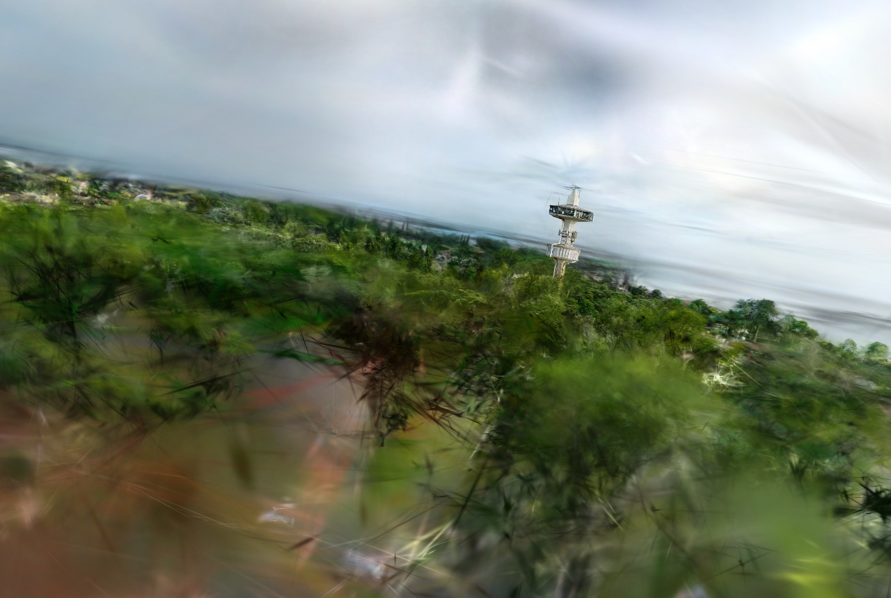
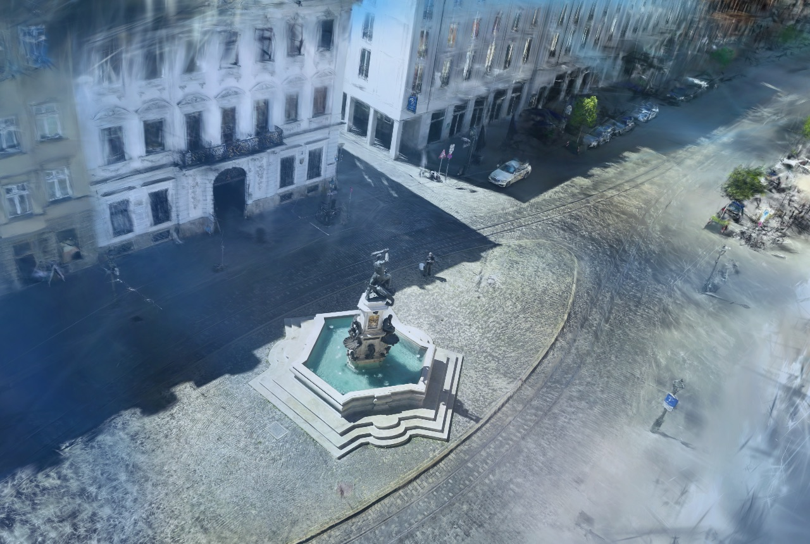

GerettetRescued
St. Ulrich & Afra, Augsburg
5:35-Drohnenflug, vollautomatisch gerettet — 490/493 Kameras.5:35 drone pass, auto-rescued — 490/493 cameras.
▶ Begehbar ansehen▶ Walk it live3D-Gaussian-Splatting · lokal · Apple Silicon 3D Gaussian Splatting · local · Apple Silicon
Aus Drohnen- oder Handheld-Video werden fotorealistische, begehbare 3D-Gaussian-Splats. Vollständig lokal gerechnet — nichts wird hochgeladen. Auch rotationslastiges Material, an dem Cloud-Apps scheitern. Drone or handheld video becomes photorealistic, walkable 3D Gaussian Splats. Computed entirely locally — nothing is uploaded. Even the rotation-heavy footage that cloud apps fail on.
St. Ulrich und Afra, Augsburg — ein 5:35-Drohnenflug. Standard-Tools gaben bei 5 von 244 Kameras auf. Die Auto-Bisection-Pipeline rettete den Flug vollautomatisch, ohne manuelles Zuschneiden. St. Ulrich und Afra, Augsburg — a 5:35 drone pass. Standard tools gave up at 5 of 244 cameras. The auto-bisection pipeline rescued it fully automatically, with no manual cutting.
Genau dort liegt der Unterschied: nicht im Erzeugen eines Splats — das können viele — sondern im Retten von Material, das sonst im Papierkorb landet. That is the whole difference: not in producing a splat — many tools do — but in rescuing footage that would otherwise be thrown away.
Echte Ergebnisse aus der Pipeline — vom geretteten Drohnenflug bis zum sauberen Outdoor-Scan. Real results from the pipeline — from a rescued drone pass to a clean outdoor scan.
5:35-Drohnenflug, vollautomatisch gerettet — 490/493 Kameras.5:35 drone pass, auto-rescued — 490/493 cameras.
▶ Begehbar ansehen▶ Walk it live
Sauberer Helix-Flug über Turm und Küste — kein Rescue nötig.Clean helix pass over tower and coastline — no rescue needed.

Historischer Platz und Brunnen, 3,2 Mio. Splats.Historic square and fountain, 3.2M splats.
Ein fertiges, begehbares 3D-Modell deines Objekts — als Web-Link zum Teilen und in offenen Formaten. A finished, walkable 3D model of your subject — as a shareable web link and in open formats.
Gebäude, Gelände, große Szenen aus langem Flugmaterial — nicht nur kleine Objekte.Buildings, terrain, large scenes from long flight footage — not just small objects.
Alles wird auf der eigenen Maschine gerechnet. Kein Cloud-Upload — NDA- und DSGVO-freundlich.Everything is computed on local hardware. No cloud upload — NDA- and GDPR-friendly.
Rotationslastig, Multi-Pass, abgebrochene Flüge — Auto-Bisection holt heraus, was andere aufgeben.Rotation-heavy, multi-pass, broken-off flights — auto-bisection recovers what others abandon.
Ein Web-Viewer-Link zum Durchlaufen der Szene, plus offene Formate (PLY, SuperSplat).A web-viewer link to walk the scene, plus open formats (PLY, SuperSplat).
Du lieferst Drohnen-/Handheld-Material — oder ich fliege das Objekt vor Ort ab.You provide drone/handheld footage — or I capture the subject on site.
Kamera-Rekonstruktion mit Auto-Bisection — auch schwieriges Material wird registriert.Camera reconstruction with auto-bisection — even difficult footage gets registered.
Gaussian-Splat-Training bis zur Konvergenz, lokal auf Apple Silicon.Gaussian splat training to convergence, locally on Apple Silicon.
Du bekommst einen Web-Link zum Durchlaufen plus die Dateien.You get a web link to walk through, plus the files.
Schreib mir kurz, worum es geht — Gebäude, Gelände, Produkt, Denkmal. Ich melde mich mit Einschätzung und Preis. Tell me briefly what it is — a building, terrain, product, monument. I'll come back with an assessment and a price.
Projekt anfragenRequest a projectcode.jkaindl@mailbox.org